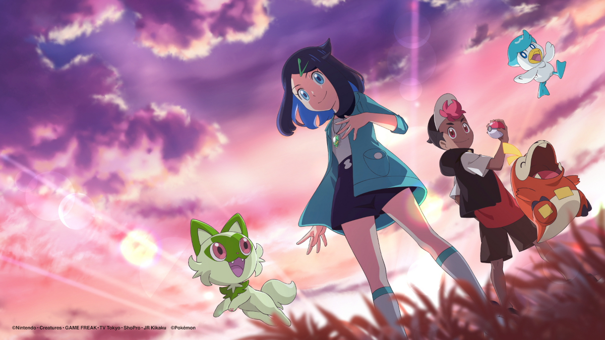

Egy teljesen új kaland az egész Pokémon világban.
Új főszereplők új álmokkal.
Új történet.
Még nincs megerőstíve, hogy ez a történet kapcsolódik -e az előző szériák történéseihez, de Ash és Pikachu ebben a szériában már nem lesznek főszereplők.
1234 epizód után egy új főszereplő.
Pokémon régiók:
Április 14-én 1 órás különleges epizóddal érkezik a premier epizód.
Friede professzor és Pikachu kapitány segítik Riko és Roy útját.
Egy rejtélyes medál és egy ismeretlen pokélabda a főszereplők tulajdonában.
Paldea régió kezdő pokémonjai.
Charizard, Noctowl, Rockruff, Metagross.
Kantotól Paldeáig.
Új főcímdal, ami Rikora összpontosít.
Új végfőcím, amely az új történetre fókuszál.
Premier: 2023.04.14 11:55 (TV Tokyo).
